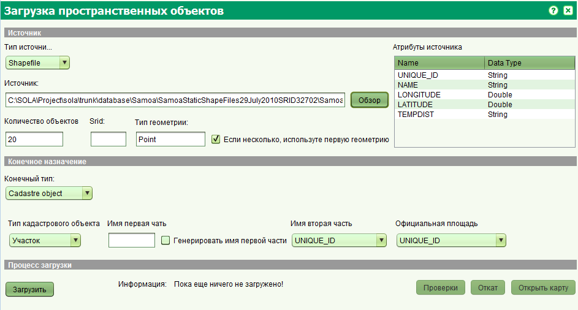

Массовая загрузка пространственных объектов
Интерфейс разделен на 3 части.
- Источник
- Назначение
- Процесс загрузки
Источник
В этой части экрана определяется источник пространственных данных. На данный момент имеется только Shapefile.
Вы можете выбрать Shapefile (.SHP), нажав в кнопку Обзор.
В этот момент шейпфайл будет считан и в верхней части отображены: Поля шейпфайла, тип геометрии, количество объектов в файле.
Назначение
В этой части экрана определяется тип назначение. На данный момент их два:
- Кадастровый объект.
Этот тип выбирается, если требуется загрузить кадастровые объекты, такие как участки, здания и т.д. тип допустимых кадастровых объектов считывается из таблицы cadastre.cadastre_object_type.
Кроме того, для этого вида назначения, вы должны:
- ввести последнюю часть кода объекта,
- для определения первой части кода объекта вы должны выбрать поле в источнике которое будет использован для получения данных, в противном первая часть будет сгенерирована
- для официальной площади вы должны также выбрать поле из источника.
- Другие объекты
Этот тип выбирается, если требуется загрузить другие типы объектов, такие как дороги, контрольные точки, населенные пункты и т.д.
Далее выберите тип объекта и поле из источника, которое будет использоваться для подписи.
Процесс загрузки
По нажатию кнопки Загрузить, будет проверен источник и назначение на правильность заполнения,
затем объекты источника будут сконвертированы в объекты назначения и отосланы на сервер для дальнейшей обработки и сохранения.
В это время будет отображаться прогресс выполнения в панеле состояния.
По окончанию будет отображено сообщение.
Кадастровое изменение может быть вызвано только для объектов которые не были успешно загружены.
Нажав кнопку Откат вы можете отменить всю загрузку.
Нажав кнопку Открыть карту для всех типов объектов, будет отображена карта и увеличена до области куда были добавлены объекты.

Смотрите также: